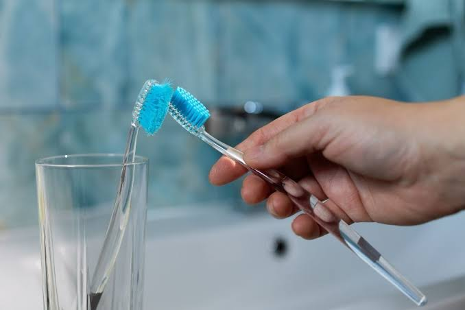
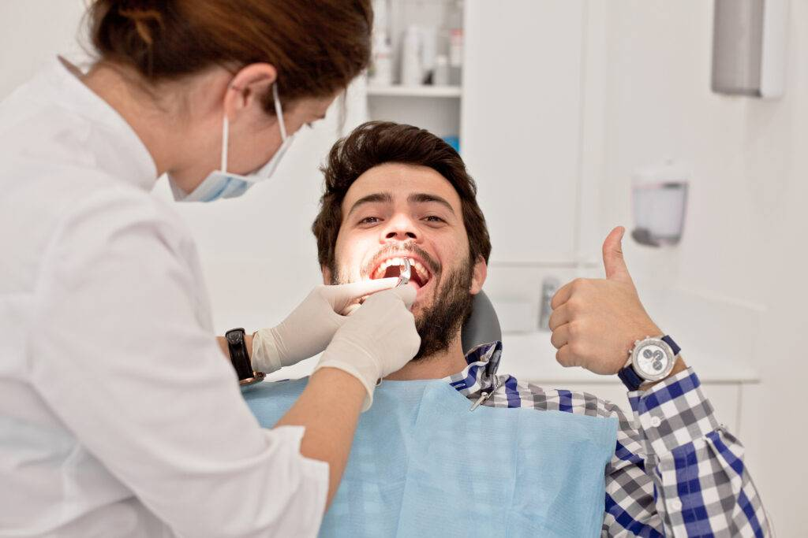
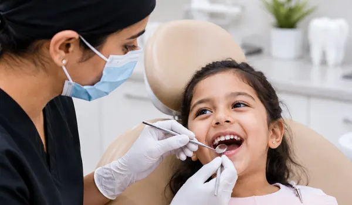
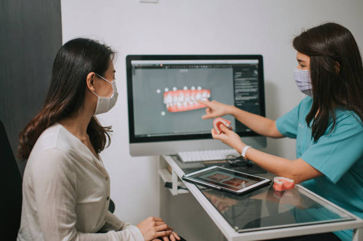

How often should you replace your toothbrush?
Your toothbrush has a job to do. Here's how to know when it may be time for a new one.
Read note →SMILE JOURNAL
Notes from HASYA
Simple notes about dental care, everyday habits and what to expect when you visit the dentist. No complicated terminology. Just useful information.

EVERYDAY CARE · 6 MIN READ
A good brushing routine does not need to be complicated. The useful part is being gentle, consistent and giving every area enough time.
Here are a few everyday habits that can make your routine more effective without turning it into another task on your list.
Read the journal notes →FROM THE JOURNAL
A few things our team wishes every patient knew before sitting in the dental chair.
Your toothbrush has a job to do. Here's how to know when it may be time for a new one.
Read note →
If you've ever wondered what the dentist is checking during a routine visit, this simple guide walks through it.
Read note →
A few small changes can make a first dental visit feel much more familiar for a child.
Read note →
Cosmetic dentistry is not one-size-fits-all. Understanding your options is a good place to begin.
Read note →EVERYDAY CARE
More pressure does not necessarily mean a better clean. A gentle, consistent technique is a better habit.
Give yourself enough time to brush all surfaces of your teeth rather than focusing only on the front.
A simple routine that you actually follow is more useful than a complicated routine that doesn't last.
Your dentist can help you understand what works for your particular teeth and gums.
DENTAL VISITS
Previous dental records, medication details and any questions you'd like to discuss can all be useful.
Your dentist should explain the findings and recommended next steps. Ask questions whenever something isn't clear.
You'll receive any relevant aftercare information and can discuss whether another appointment is needed.
FOR FAMILIES
Children often take their cues from the adults around them. Keeping the conversation relaxed and treating the visit as a normal part of growing up can help.
At HASYA, we take time to let younger patients become familiar with the space and the people around them.
Read the patient guide →SMILE & CONFIDENCE
If there is something about your smile that makes you feel self-conscious, it's okay to talk about it. The first step is understanding what is possible.
Tell your dentist what you notice and what you would like to change.
Different concerns can have different treatment approaches.
A consultation is a conversation, not a commitment to treatment.
GOOD TO KNOW
The journal is intended as general educational information. Your own dentist can give you advice based on your individual dental needs.
The appropriate schedule can vary between people. Your dentist can recommend a visit frequency based on your oral health and individual needs.
Of course. Bring your questions to your appointment and our team can discuss how the information relates to you.
FROM READING TO DOING
Sometimes the easiest way to understand something is simply to talk about it.